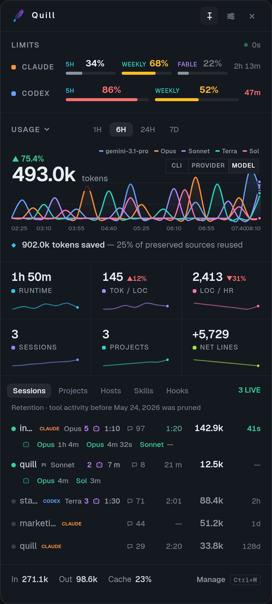
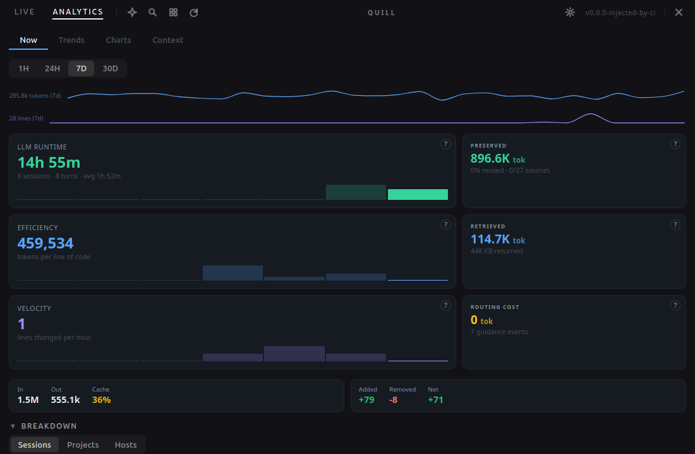
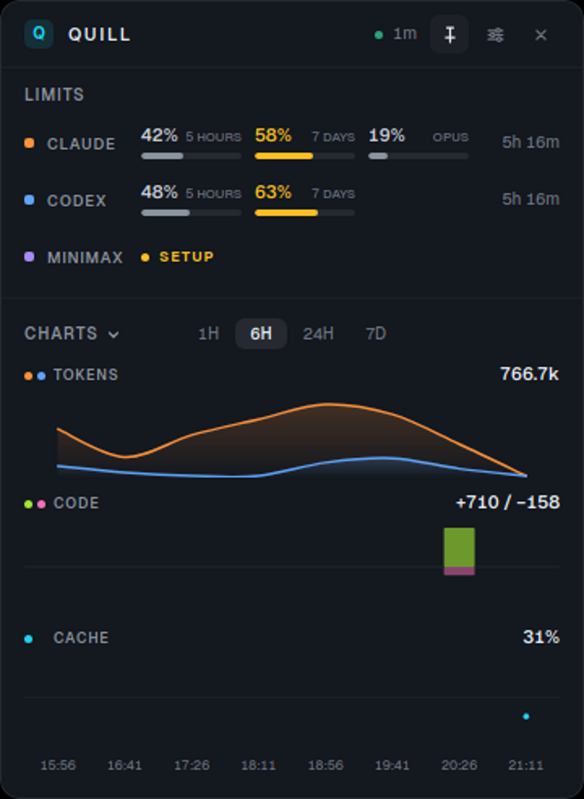
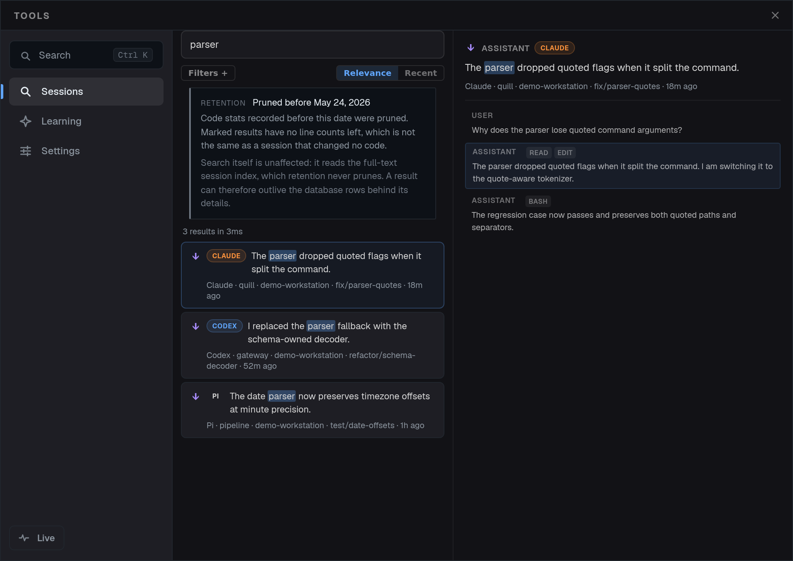
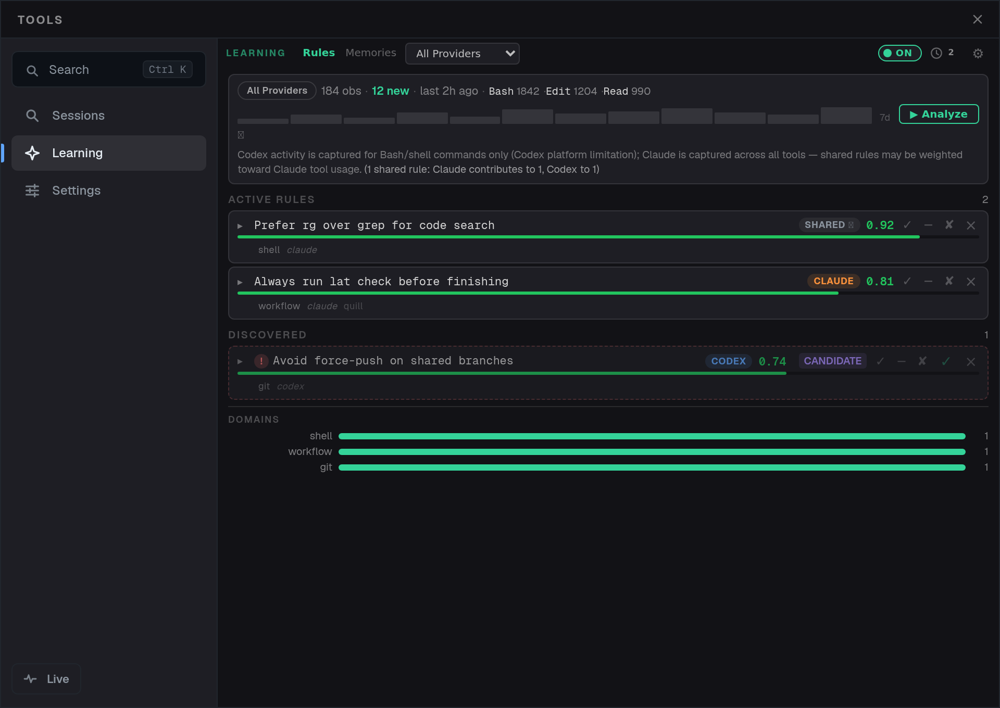

When a run slows down, Quill shows whether the problem is quota pressure, token overhead, or context retrieval.
debugging a long agent sessionOpen-source telemetry for agent-heavy development
Telemetry for live AI coding.
Quill watches Claude Code, Codex, and MiniMax from the side: live quota pressure, searchable work history, context movement, and workflow rules you can inspect before they become habit.

Not a chat client.
Not a wrapper around your agent.
A sidecar for the parts of agent work that disappear mid-run.
What Quill makes visible
The work is already happening. Quill gives it instrumentation.
Live limits
Know the cap before it cuts the run.
Bucket utilization, elapsed window, reset timing, and severity stay visible while the agents keep working.

Analytics
Session metrics that answer operational questions.
Runtime, token efficiency, code velocity, context savings, retrieval, and routing cost share one timeline.


Context accounting
Large content becomes a reference instead of a paste.
Quill separates preserved tokens, retrieved tokens, routing cost, and telemetry so savings are not hand-waved.
Session search
Past runs become an index, not a memory test.
Find work by prompt text, branch, project, host, role, file, command, or tool action.

Learning system
Repeated behavior becomes a rule you can inspect.
Rules carry provenance, confidence, domain, project, and state before they influence future sessions.

Where it helps during the run
Every panel answers a different kind of operator panic.
The proof run
One window follows the whole session.
Quill is built for the moment when the transcript is too large, the reset timer matters, and the useful answer is buried in a session from another branch. It keeps those signals close enough to change what you do next.
Field notes
The value is not another dashboard. It is fewer blind spots.
Install
Put the instrument panel beside the agents you already use.
MIT licensed. Tauri + React. Static releases for macOS, Linux, and Windows. No hosted account is required for the marketing page or the desktop app.
Providers
Claude Code, Codex, and MiniMax with setup and status surfaced in the app.
Platforms
macOS universal DMG, Linux AppImage and Debian package, Windows NSIS installer.
Project
Open source repository with architecture notes, Pages deploy workflow, and screenshot pipeline.